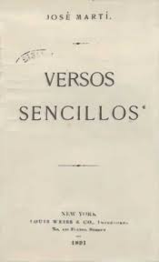
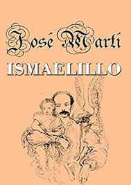
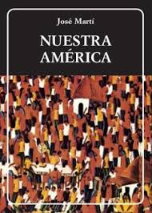
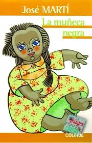
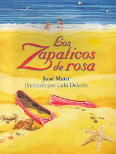
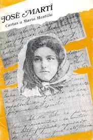
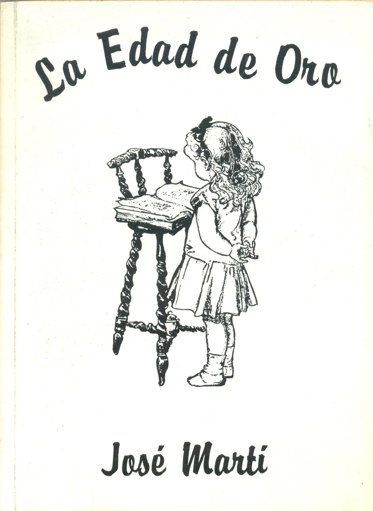
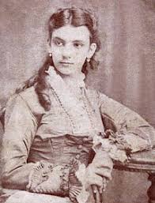
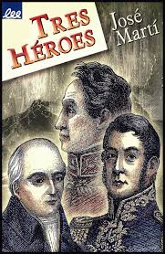

José Julián Martí Pérez
José Julián Martí Pérez (1853-1895) fue un escritor, poeta y líder político cubano, considerado un ícono de la independencia de Cuba y una figura clave en la literatura latinoamericana. A través de sus obras, como *Versos Sencillos* y *Nuestra América*, dejó un legado en la lucha por la justicia social y la unidad latinoamericana.
Galería de Obras

Versos Sencillos

Ismaelillo

Nuestra América

La muñeca negra

Los zapaticos de rosa

Cartas a María Mantilla

La Edad de Oro

La Niña de Guatemala

Tres heroes